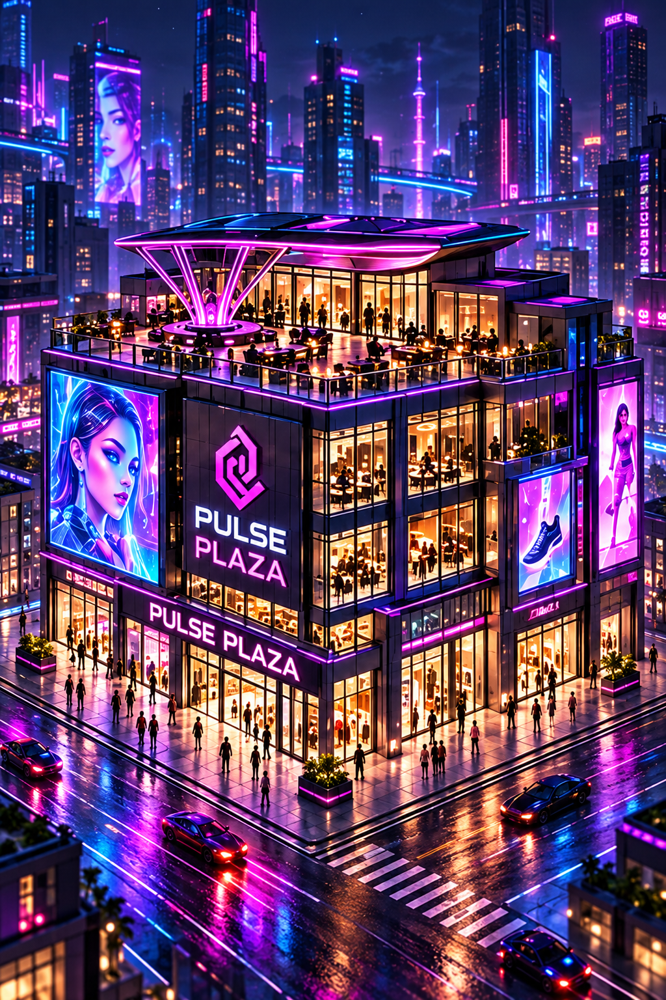
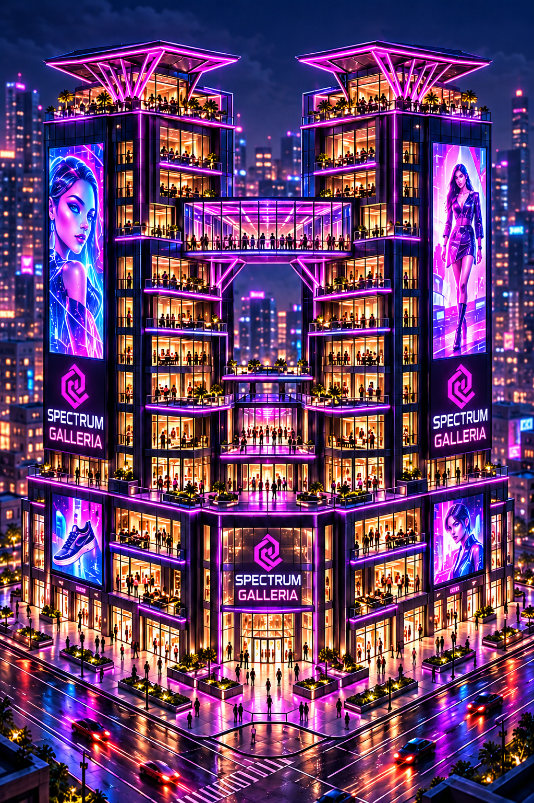
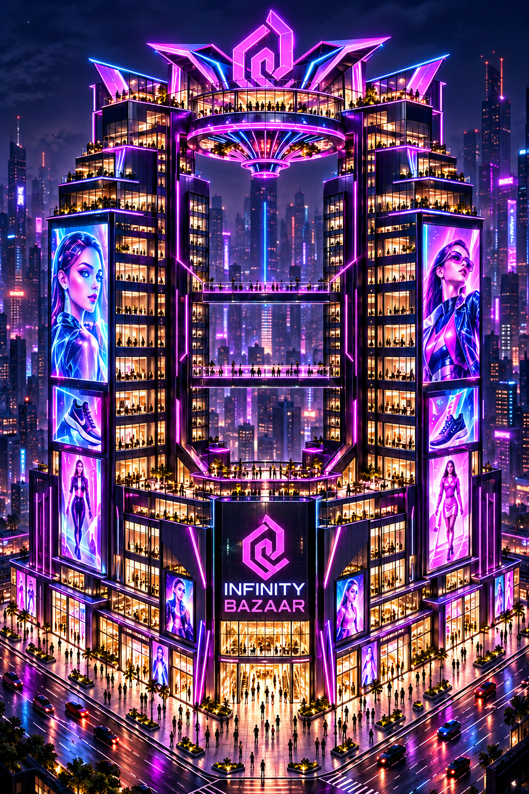
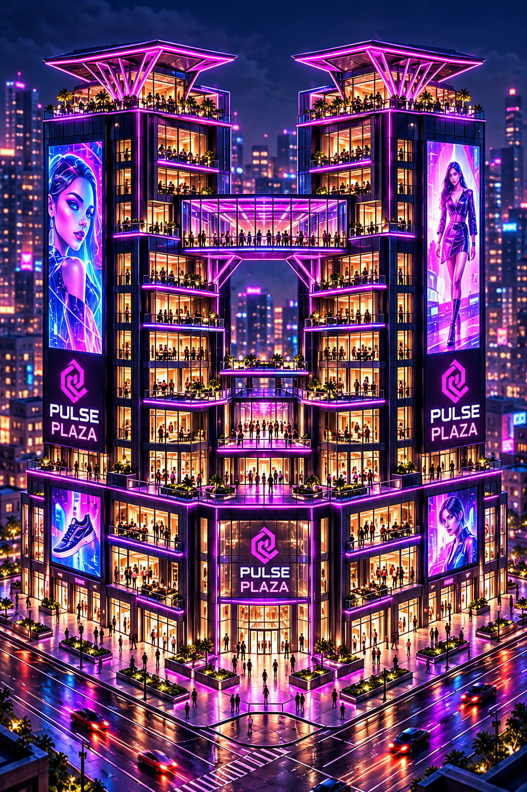
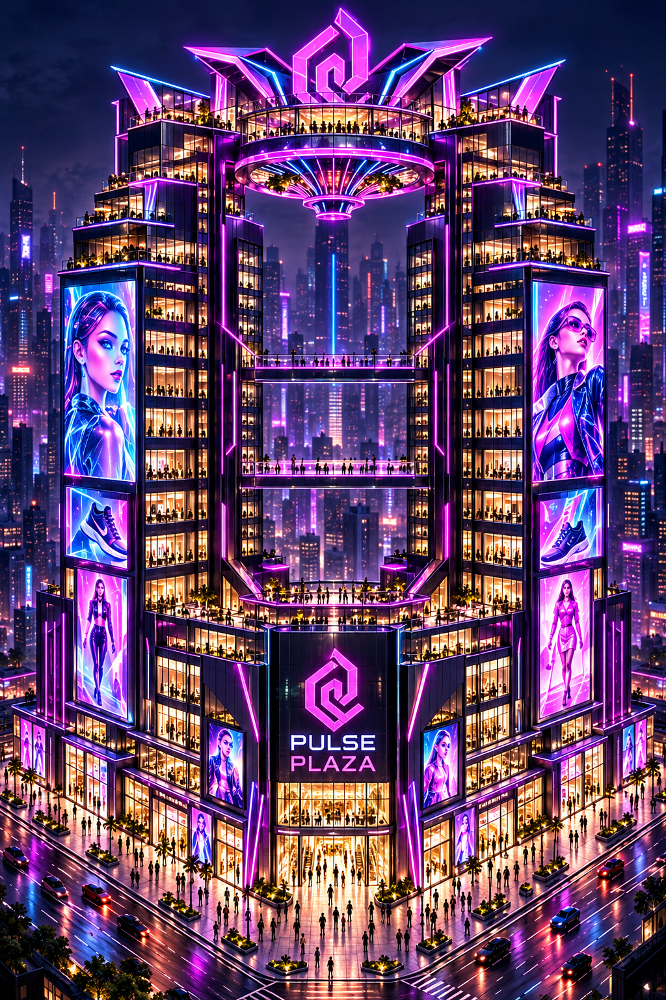

Stage I is the unchanged source. Stages II/III are agent-produced signage candidates, pending browser acceptance and integration. Originals preserved. Final export framing remains open; Infinity Bazaar's rooftop emblem has tight clearance.




